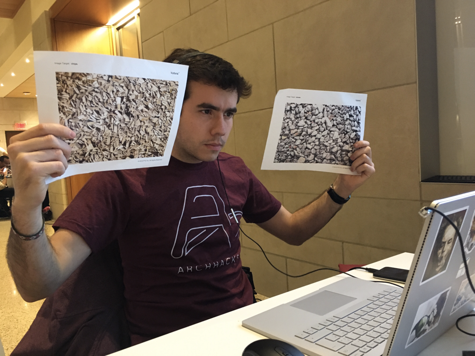

--- 
permalink: amviewlate 
image: img/amviewlate/staircase.jpeg
---
{% include nav.html %}

<div class="fullpost">
    <div class="container post">

        <!-- Portfolio Item Heading -->
        <div class="row">
            <div class="col-lg-12">
                <h1>
                    Amviewlate <br>
                </h1>
            </div>
        </div>
        <hr>
        <!-- /.row -->

        <!-- Portfolio Item Row -->
        <div class="row">

            <div class="col-md-8">
                
            </div>

            <div class="col-md-4 overview">
                <h3>Overview</h3>
                <p>Amviewlate is an augmented reality prototype designed to help people with Parkinson's Disease navigate environments using voice recognition and visual cues. Amviewlate was selected as a <a href="https://devpost.com/software/amviewlate">DevPost Staff Pick</a> from hundreds of hackathon entries.</p>
                <h3>Project Details</h3>
                <p><span class="highlight">Role:</span> Research and Prototyping</p>
                <p><span class="highlight">Team:</span> Pierre Amelot, Sara Stalla</p>
                <p><span class="highlight">Methods:</span> Interviews, Literature Review, Paper Prototyping, VR Prototyping
                    <p><span class="highlight">Tools:</span> Blender, Unity, Vuforia, Google Cardboard, Android Speech Recognizer</p>
            </div>
        </div>
        
        <!-- Portfolio Item Detail -->
        <div class="row post-description">
        <div class="col-lg-8">
        <h3>The problem</h3>
                <p>More than 10 million people worldwide are living with Parkinson's disease. Parkinson’s patients have trouble controlling their movements from reaching for objects to simply walking across the room. These problems lead to loss of independence and reduced quality of life: sufferers often avoid activities outside of the home, leading to isolation and depression.</p> 
                <p>At the start of the Hackathon, we asked ourselves, how can we empower people with Parkison's to feel more comfortable engaging with the world around them?
                </p>
            </div>
            <div class="col-lg-4">
             
<br>
<figcaption class="figcaption">The shuffling gait of a person with Parkinson's on left compared to a more fluid gait, via one <a href="https://web.stanford.edu/group/hopes/cgi-bin/hopes_test/cueing-devices-for-improving-gait-ability-in-parkinsons-disease-and-other-motor-disorders/">Stanford study.</a></figcaption>
            </div>
        </div>
           <div class="row post-description">
            <div class="col-lg-8">

                
                <h3>Process</h3>
                <p>To begin, we conducted several guerilla interviews with friends and family who either suffered from, or knew people who suffered from Parkinson's Disease. Our guiding insight came after watching <a href="" target="_blank">Mileha Soneji's TED talk: Simple hacks for life with Parkinson's</a>. Through this and other research, we discovered that many of the limitations experienced by people with Parkinson’s disease can be overcome with perceptual tricks. </p><p>While the pace of walking on a flat surface is staggered and interrupted, the continuous motion of using a staircase, or even the illusion of a staircase, can enable a person with Parkinson’s to walk with a regular gait. And while many encounter difficulty extending an arm to interact with an object, the introduction of a moving target provides an active stimulus that prompts a response. In one video interview, Tom, a 40 year old man suffering from Parkinson's, said: <em style="color:#f25a4c;"> "If you get me up a flight of stairs I'd have no problem at all. If someone chucked a ball at me, my hand would go straight out. And yet if you asked me to put my arm out, it would go so slowly."&#32;</em>
            </div>
            <div class="col-lg-4">

              <br>
              <figcaption class="figcaption">Tom's interview about Parkinson's is archived at <a href="http://www.healthtalk.org/peoples-experiences/nerves-brain/parkinsons-disease/topics">health.org</a></figcaption>

               <!--
                

-->
            </div>
            <div class="col-lg-8">
            </div>
        </div>
<div class="row">
    <div class="col-lg-8">
       <h3>Paper Prototyping and 3D design</h3>
                            <p>What if we could take this painted staircase illusion and other visual cues and apply them anywhere in the world? So we set out to create an augmented reality solution focusing on two motion issues occurring in people with Parkinson's: "freezing of gait," an ambulatory disturbance that results in slow, shuffled walking, and "dyskinesia," the impairment of voluntary movement, particularly without stimuli to trigger reflexes. 
                            </p><p>We used paper markers to prototype the ideal motion cues for walking. Based on research and prototyping, the final project used three visual cues: staircase for walking, rotating footprints for turning, and a flying baseball for grabbing objects. While we weren't able to co-design the experience with people with Parkinson's, we used this stage to work out central usability questions, such as, what is a natural speed and direction of cues for turning? Through this prototyping, we also realized that voice command would be a huge asset to trigger different illusions, so motion could be as seamless as possible.
                            Once we determined this, I searched and altered 3D assets and scripts for the foot, ball, and stair illusions using the Unity Store and Blender while Pierre got to work getting the AR and voice recognition up and running.</p>
                            <br>
        
    </div>
    <div class="col-lg-4">
        
        <figcaption class="figcaption">I play the role of the "computer" while paper prototyping the turning motion.</figcaption>
    </div>
</div>
  <div class="row">
   <div class="col-lg-12">
       <h3 class="post-cover">Three cues</h3>
   </div>
    <div class="col-lg-4 post-cover" style="margin-bottom:0">
        
        <figcaption class="figcaption">Turning feet for changing direction</figcaption>
    </div>
    <div class="col-lg-4">
        
        <figcaption class="figcaption">Ball cue for grabbing objects</figcaption>
    </div>
    <div class="col-lg-4">
        
        <figcaption class="figcaption">Staircase cue for walking on a flat surface</figcaption>
        <br>
        <br>
    </div>
    
</div>
        <div class="row">
            <div class="col-lg-12">

                <h3 class="post-cover">Demo</h3>
                <p>Amviewlate was developed over 48 Hours for Google Cardboard at the <a target="_blank" href="https://archhacks.io/">2016 ArchHacks HealthTech Hackathon</a>. Watch Amviewlate in action, with image markers and voice recognition used to trigger three types of cues found to help people with Parkinson's disease: a staircase illusion for walking, foot rotation for turning, and a flying ball for grabbing objects.</p>
                <iframe src="https://player.vimeo.com/video/190448649" width="640" height="389" frameborder="0" webkitallowfullscreen mozallowfullscreen allowfullscreen></iframe>
            </div>
        </div>

    </div>
</div>
